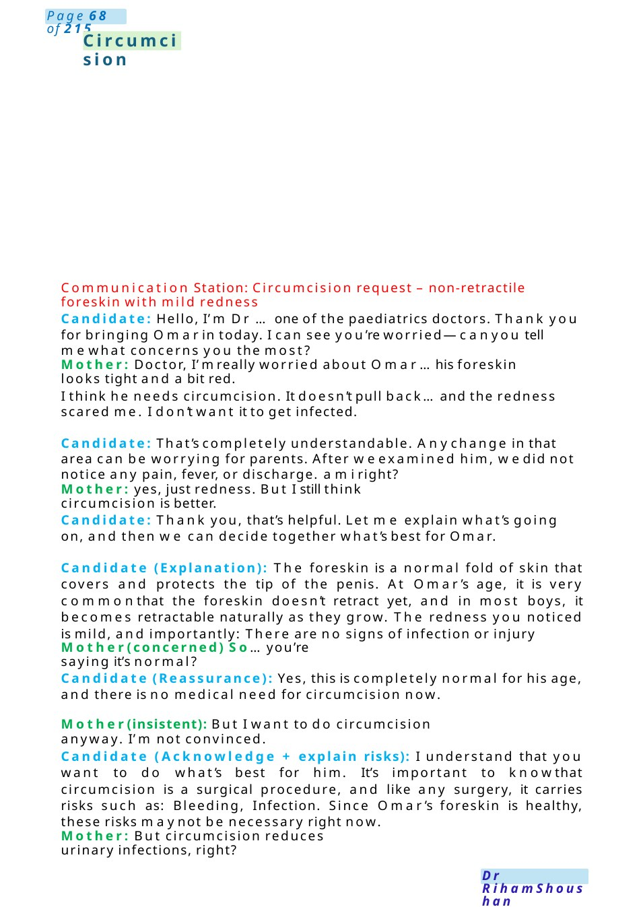
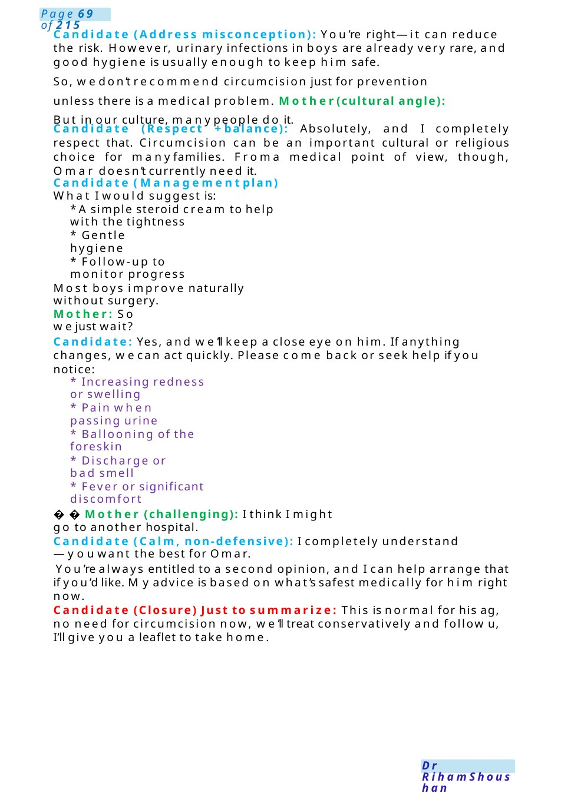
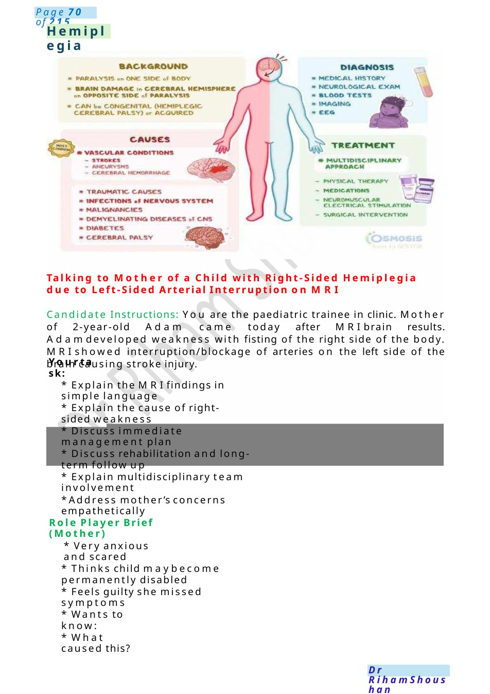

Circumcision
Communication Station: Circumcision request – non-retractile foreskin with mild redness Candidate: Hello, I’m Dr ...one of the paediatrics doctors. Thank you for bringing Omarin today. I can see you’re worried—canyou tell mewhat concerns you the most?
Scenario Summary
Communication Station: Circumcision request – non-retractile foreskin with mild redness Candidate: Hello, I’m Dr ...one of the paediatrics doctors. Thank you for bringing Omarin today. I can see you’re worried—canyou tell mewhat concerns you the most?
Full Original Scenario

Circumcision
Communication Station: Circumcision request – non-retractile foreskin with mild redness
Candidate: Hello, I’m Dr ...one of the paediatrics doctors. Thank you for bringing Omarin today. I can see you’re worried—canyou tell mewhat concerns you the most?
Mother: Doctor, I’mreally worried about Omar...his foreskin looks tight and a bit red.
I think he needs circumcision. It doesn’t pull back...and the redness scared me. I don’t want it to get infected.
Candidate: That’s completely understandable. Anychange in that area can be worrying for parents. After weexamined him, wedid not notice any pain, fever, or discharge. ami right?
Mother: yes, just redness. But I still think circumcision is better.
Candidate: Thank you, that’s helpful. Let me explain what’s going on, and then we can decide together what’s best for Omar.
Candidate (Explanation): The foreskin is a normal fold of skin that covers and protects the tip of the penis. At Omar’s age, it is very commonthat the foreskin doesn’t retract yet, and in most boys, it becomes retractable naturally as they grow. The redness you noticed is mild, and importantly: There are no signs of infection or injury
Mother(concerned) So...you’re saying it’s normal?
Candidate (Reassurance): Yes, this is completely normal for his age, and there is no medical need for circumcision now.
Mother(insistent): But I want to do circumcision anyway. I’m not convinced.
Candidate (Acknowledge + explain risks): I understand that you want to do what’s best for him. It’s important to knowthat circumcision is a surgical procedure, and like any surgery, it carries risks such as: Bleeding, Infection. Since Omar’s foreskin is healthy, these risks maynot be necessary right now.
Mother: But circumcision reduces urinary infections, right?

Candidate (Address misconception): You’re right—it can reduce the risk. However, urinary infections in boys are already very rare, and good hygiene is usually enough to keep him safe.
So, wedon’t recommend circumcision just for prevention unless there is a medical problem. Mother(cultural angle): But in our culture, manypeople do it.
Candidate (Respect +balance): Absolutely, and I completely respect that. Circumcision can be an important cultural or religious choice for manyfamilies. Froma medical point of view, though, Omar doesn’t currently need it.
Candidate (Managementplan) What I would suggest is:
- Asimple steroid cream to help with the tightness
- Gentle hygiene
- Follow-up to monitor progress
Most boys improve naturally without surgery.
Mother: So wejust wait?
Candidate: Yes, and we’ll keep a close eye on him. If anything changes, wecan act quickly. Please come back or seek help if you notice:
- Increasing redness or swelling
- Pain when passing urine
- Ballooning of the foreskin
- Discharge or bad smell
- Fever or significant discomfort
Mother (challenging): I think I might go to another hospital.
Candidate (Calm, non-defensive): I completely understand—youwant the best for Omar.
You’re always entitled to a second opinion, and I can help arrange that if you’d like. Myadvice is based on what’s safest medically for him right now.
Candidate (Closure) Just to summarize: This is normal for his ag, no need for circumcision now, we’ll treat conservatively and follow u, I’ll give you a leaflet to take home.

Hemiplegia
Talking to Mother of a Child with Right-Sided Hemiplegia due to Left-Sided Arterial Interruption on MRI
Candidate Instructions: You are the paediatric trainee in clinic. Mother of 2-year-old Adam came today after MRIbrain results. Adamdeveloped weakness with fisting of the right side of the body. MRIshowed interruption/blockage of arteries on the left side of the brain causing stroke injury.
Yourtask:
- Explain the MRIfindings in simple language
- Explain the cause of right-sided weakness
- Discuss immediate management plan
- Discuss rehabilitation and long-term follow up
- Explain multidisciplinary team involvement
- Address mother’s concerns empathetically
Role Player Brief (Mother)
- Very anxious and scared
- Thinks child maybecome permanently disabled
- Feels guilty she missed symptoms
- Wants to know:
- What caused this?